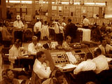
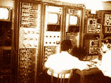
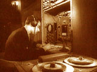
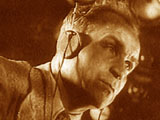
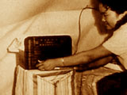
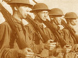
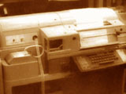
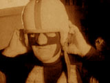
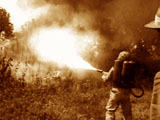

| Ministère de l'information | ||
| Service des données La salle de contrôle est le véritable centre nerveux du ministère de l'information. C'est ici que chaque jour les fait et gestes quotidiens sont enregistrés et fichés pour être ensuite passés au service d'analyse. |
 Service d'analyse C'est dans la salle d'analyse que sont effectuées les recherches préliminaires pour identifier des suspects à partir des données du ministère. Par exemple, les fonctionnaires du service d'analyse vérifient si les données des services de surveillances corroborent avec les données des formulaires de déclarations de déplacements. |
 Service de surveillance vidéo. Peu importe où que vous soyez, au travail, à la maison ou en vacance, soyez sans crainte pour votre sécurité. Il y a toujours un fonctionnaire pour surveiller vos activités. |
|  Service de surveillance Audio Place publics, transports en communs ou appartements privés, il y a toujours un micro du ministère de l'information à porté de voix. |
 Service des télécommunications Grâce au zèle de nos fonctionnaires, c'en est fini de ces appels obscènes qui perturbent votre vie privée. Le ministère de l'information peut tracer n'importe quel appel téléphonique. |
 Service de censure Ne faites pas comme cet traitre. Seul l'information approuvé par le ministère est valide. Inutile de vous d'écouter les menteries de nos ennemies. |
 Esquade anti-désinformation. L'escouade est responsable d'arreter toute personne coupable du crime de désinformation. |
Service des permis Tous appareil pouvant servir à produire, distribuer ou communiquer de l'information doit formellement etre aprouvé par le ministère. Ceci est un exemple d'appareil illégal saisie par l'esquade anti-désinformation. Posez vous la question. Cette machine est pour enregistrer qui ? Vous ? |
Service d'enquête Une fois incarcéré par l'esquade anti-désinformation, les coupables doivent passer par le service d'enquête. Ce fonctionnaire prépare l'équipement servant à simplifier le processus de questionnement. |
 Unité légal L'unité légal du service d'enquête enregistre la déposition du coupable pendant le processus de questionnement. |
 Unité psychologique C'est cette unité du service d'enquète qui procede au questionnement effectif des coupable. Cet officier se prépare à une séance de questionnement ou il utilisera les meilleurs méthodes phychologiques. |
 Esquade d'erradication Cet unité spécial a pour mandant de procéder à l'élimination des moyens et personnes servant la désinformation |